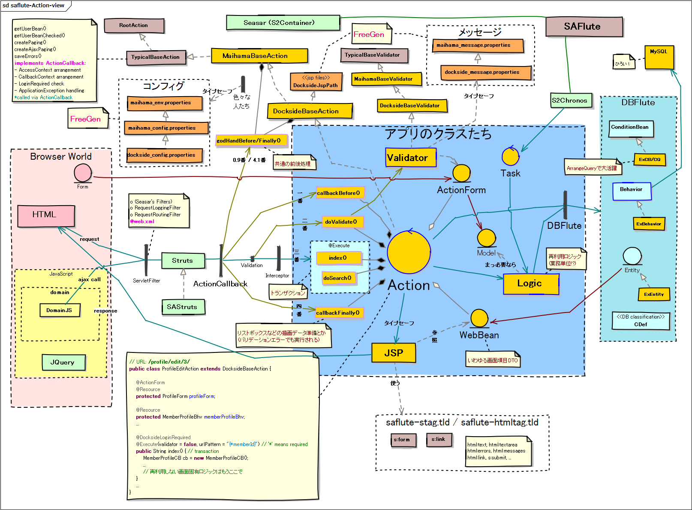
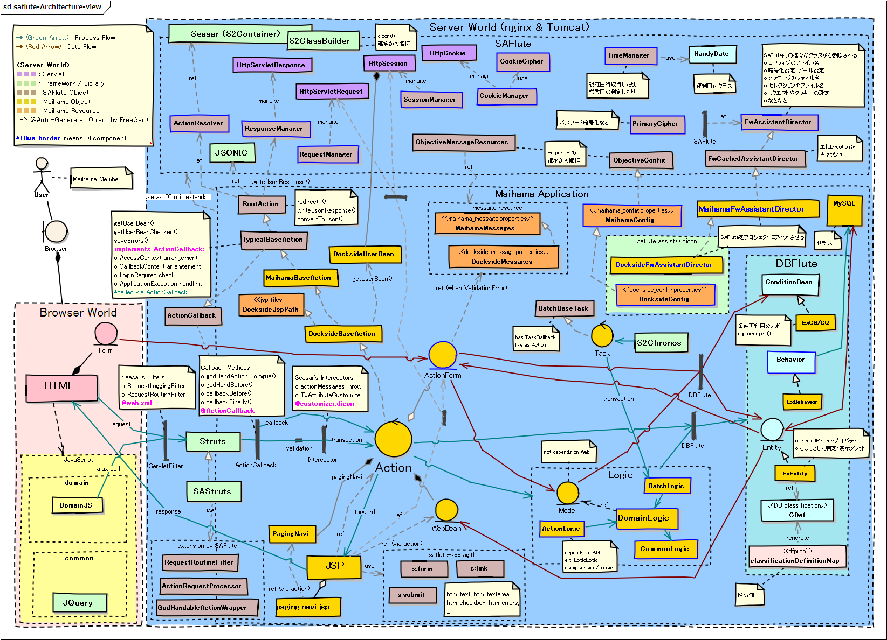

SAFlute
ぜひ、LastaFlute をお使いください！
${indexlist}SAFluteとは？
DBFluteを使って、リーンスタートアップ、インクリメンタル開発 をターゲットに、SAStruts を最適化した拡張モジュール (+ 開発スタイル) です。
SAFluteのコンセプト
インクリメンタル開発では、業務の変更が激しく、DB変更だけでなく画面構成の変更なども頻繁に発生します。 そして、そもそも フェーズごとに適した実装ポリシーが変化 していきます。
そのような変化を受け入れるための細かいケアをしています。
- ソースコードを読むことが多いため、探しやすく
- ドキュメントを書く時間があまりないため、ソースコードを読んで仕様(挙動)を確認することが多くあります。 例えばひとつ、SAStrutsのいわゆる "IndexActionだらけ" にならないように、ActionやJSPに探しやすい名前を付けられるようにしています。 (同時に、規約ベースマッピングによる統一性のメリットも享受)
- また、既に作成された画面を動かして、挙動を確認することが多くあります。 デバッグログにて、どんなActionクラスやJSPが動いたのかを見つけやすいように出力しています。
- 気付いたらよくデグレってるので、変更を検知しやすく
- 業務も変わりプログラムも変更しまくっていると、気付いたらよくデグレっています。 例えばひとつ、Actionクラスの return 値で指定する画面遷移をタイプセーフにし、DBFluteのDB変更耐性と同じようなメリットをWeb側でも享受できるようにしています。
- 特にリファクタリングは、継続的に求められるスキルです。 ディベロッパーのリファクタリング力のアップもさることながら、できる限り影響範囲を特定しやすいような構成にしておくことが大切です。
- という感じで細かくケア
- SAFlute自体も、リーンスタートアップ、インクリメンタル開発の現場で、リーンスタートアップ、インクリメンタルに開発されました。 こういった現場のニーズをとらえながら、細かく細かく現場のスピードを高めるケアを追加しておきました。
- "仕組み" でディベロッパーが業務に集中できるようにすることが最大の目的です。 実際に機能を見ていくとその特徴がわかるかと思います。
Actionさんマップ
Actionクラスとその仲間たちです。
図 : SAFlute - Actionさんマップ 
{kind=link}
アーキテクチャ概念マップ
SAFluteの全体アーキテクチャのビューです。
図 : SAFlute - アーキテクチャ概念マップ 
{kind=link}
SAFluteの機能
最初の二つのきっかけ (Name & Typesafe)
SAFluteには、様々な最適化が施されていますが、実装を始めた最初の二つのきっかけがあります。
- Action, JSP Name Identity
- ActionクラスやJSPファイルの名前を識別しやすく
- Action TypeSafe Return
- Actionの@Executeメソッドの戻り値をタイプセーフに
SAFlute自らインクリメンタル開発 (ActionCallback, ...)
二つのきっかけから全ては始まり、Web側は時代の流れとともに新たな思想も生まれ、SAFluteのコンセプトにフィットした現場からはどんどんニーズが出てきました。
- Action Json Handling
- JSONでのやり取りをオブジェクト型で
- Action Callback
- 前後処理をInterceptorではなくActionで
- Login Handling
- ログイン処理にログインチェック処理、権限チェックなど
- Internationalization (i18n)
- 国際化対応(LocaleやTimezone)
インクリメンタル開発で外せない機能たち (Prop, Logging, ...)
そして、インクリメンタル開発では外せない機能も明確になりました。
- Objective Typesafe Properties
- 継承できてタイプセーフなProperties
- Friendly Logging
- ぜひ見たいと思うようなログ
欠かせないDBFluteの機能たち (LReverse, UTFlute, ...)
また、SAFluteの機能というわけではありませんが、インクリメンタル開発では欠かせないDBFluteの機能を使うことが前提となっています。
- 循環テストデータ運用
- テストデータを手動で準備していくことが困難なため、LoadDataReverseを使って既に動く画面からReplaceSchemaのデータを作成していきます。 (もちろん、手動での微調整もやりつつ)
- UTFluteでお手軽テスト
- 業務変更が多く、テストケースの実装やメンテもなかなか困難であるため、凝ったテストはなかなか書けません。 手軽にモックできて手軽に実装できる UTFlute を使っています。
- さらに、UTFluteを使って費用対効果の高い横断的なテストを作成するとよいでしょう。 (PolicyStoryを使って、ソースコードの一括チェックなど)
SAStrutsと半同棲の三ヶ月
SAStrutsとDBFluteの構成で、少人数でのリーン・スタートアップのサービス構築において生まれました。 基本思想と構成は、既に運用実績のあるアーキテクチャと言えます。
SAFluteの環境
SAFluteのプロジェクト構成
では、実務的なプロジェクト構成の説明に入ります。
SAFluteのパッケージ構成
そして、パッケージ構成も見てみましょう。
とにかく大事なAssistantDirector
現場にフィットさせるために、拡張ポイントを用意しています。
配布はソースコードだけ
jarファイルとしては提供されてはおらず、ソースコードだけが公開されており、自由に閲覧・取り込み・拡張ができるようになっています。"SAFluteリポジトリ" にて公開されていて、gitクライアントがあれば誰でもチェックアウト可能です。
"Maihama" プロジェクトというExample実装があります。 Example実装も含めてSAFluteと言えるので、一緒にチェックアウトしておくと良いでしょう。
詳しくは、SAFluteのプロジェクト直下に INTRO_ja.txt がありますのでそちらをご覧下さい。さらに、それぞれのプロジェクトに README_ja.txt もあります。
SAFlute Template
有志の方が作ってくださっている、SAFluteの環境構築のための Eclipse プラグインがあります。それを使う事で、SAFlute環境を手っ取り早く作ることができます。
ドキュメントリンク
- Actionクラスの実装
- Action, JSP Name Identity ※ActionクラスとJSP名を検索しやすく
- Action TypeSafe Return ※Actionの戻り値をタイプセーフに
- SAFluteのURLマッピング ※URLマッピングのルールについて
- SAFluteのJSONハンドリング ※JSONでのやり取りをオブジェクト型で
- SAFluteの現在日時 ※現在日時の取り方、細工の仕方
- SAFluteでプロパティを追加するやり方 ※xxx_config.properties や xxx_env.properties
- アーキテクチャ
- Action Callback ※前後処理をInterceptorではなくActionで
- SAFluteのタイプセーフProperties (Objective Typesafe Properties) ※propertiesの話
- ログにこだわるSAFlute (Friendly Logging) ※見たいと思うようなログ
- SAFluteのログイン周り (Login Handling) ※xxx_config.properties や xxx_env.properties
- SAFluteの国際化対応 (i18n) ※国際化対応(LocaleやTimezone)
- SAFluteで非同期処理 (Async) ※非同期処理の実行
- SAFluteのAssistantDirector ※現場フィットさせる拡張ポイント
- プロジェクト環境
- SAFluteのプロジェクト構成 ※Mavenの環境なども
- SAFluteのパッケージ構成 ※スマートデプロイの話とか
- SAFluteでビルドデプロイするやり方 ※新しいデプロイ環境のつくり方なども